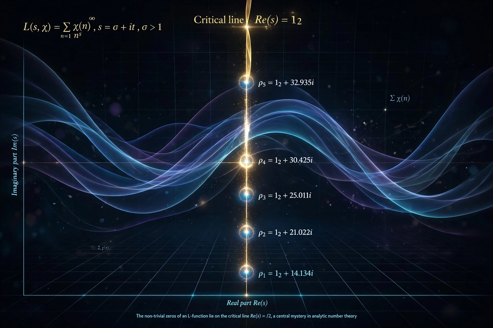

In mathematics, an L-function is a meromorphic function on the complex plane associated with arithmetic objects — number fields, elliptic curves, modular forms — generalising the Riemann zeta function.
L-functions typically begin as a Dirichlet series Σ an n−s converging for Re(s) large, with an Euler product over primes, and are expected to admit analytic continuation and a functional equation relating s to a reflected value. Examples include Dirichlet L-functions, Dedekind zeta functions, Hecke and Artin L-functions, and the Hasse–Weil L-function of an elliptic curve.
The zeros of L-functions encode deep arithmetic information: the generalised Riemann hypothesis governs prime distribution, and the Birch and Swinnerton-Dyer conjecture concerns the order of vanishing at s=1. The Langlands program predicts all L-functions arise from automorphic representations. See also Analytic number theory.